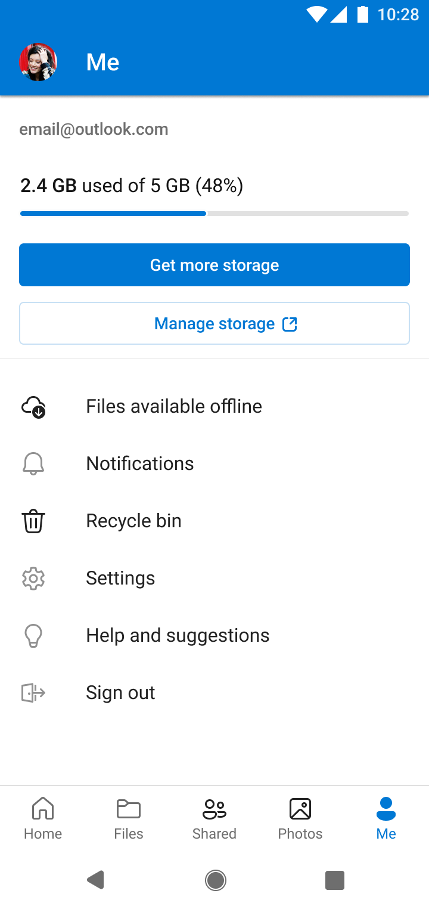
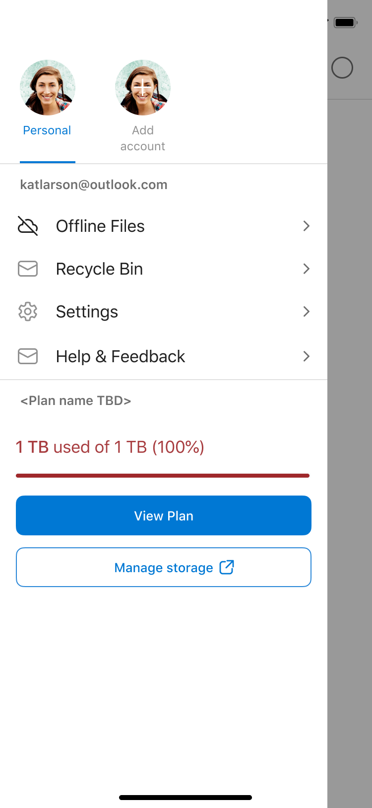
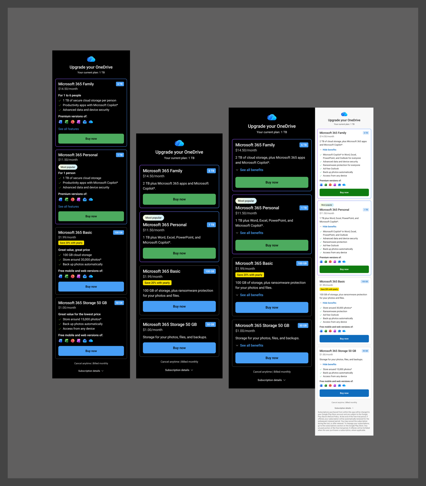
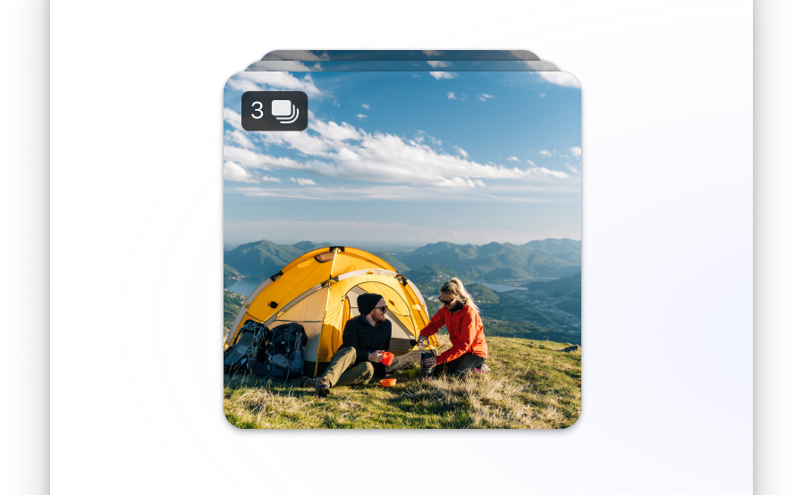
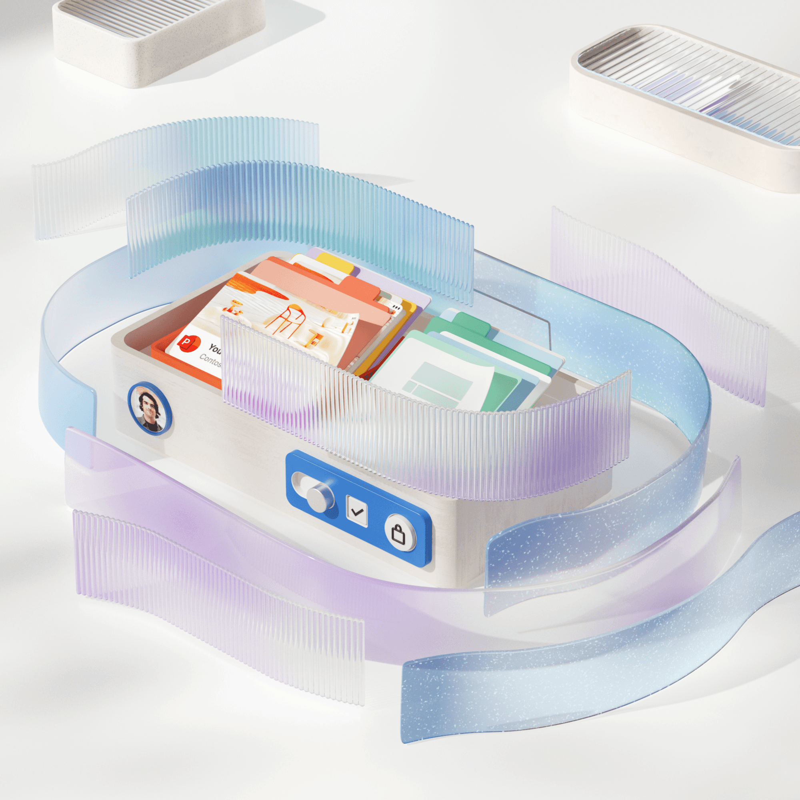

Product designer at Microsoft OneDrive.
I design systems that help people understand storage, protect their photos, and make confident decisions about their files.
My work spans consumer growth, mobile experiences, and cross-product infrastructure. I lead from problem framing and partner alignment through production specs, launch, and validation. More about me
Selected work
Universal Quota Bar Framework
A shared storage language across OneDrive, Outlook, Windows, and Microsoft account.


OneDrive Photo Clean Up
Helping people review unwanted photos and free up space with confidence.


Monetization & Growth
Upgrade experiences grounded in real storage needs, across platforms.

Photostack
Trust-first AI photo grouping for OneDrive on iOS.

Next of Kin
Clear, sensitive guidance for accessing a loved one's digital legacy.

Xiaomi SCOOBE
Introducing OneDrive backup during new-device setup.
Modernizing the Files Experience
A clearer, more consistent foundation for OneDrive mobile.
Meetings View on Mobile
Finding files, recordings, and notes through the meeting they came from.